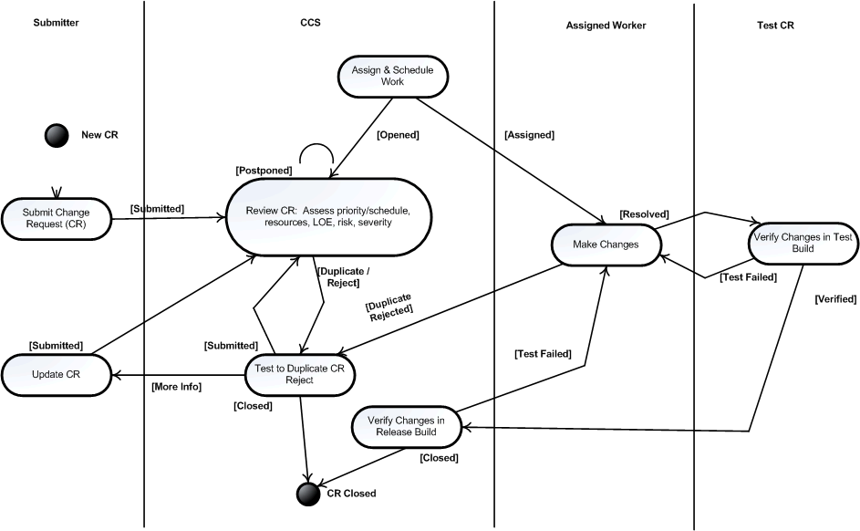
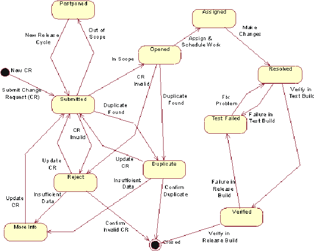

OUM |
Blended Delivery |
||
Method Navigation |
Current Page Navigation |
||
|
|
||||||||
Blended delivery began gaining in popularity in the early 1990s, and was motivated initially by the desire to cut personnel costs. Since then many organizations have moved towards using offshore resources for software development. The key drivers are the following:
Oracle has developed our Blended Delivery program to outsource resource-intensive development tasks to an off-site team of multi-skilled professionals. By using this approach, clients avoid the cost, travel expense, and inconvenience of hosting a large external team at their facilities. In addition, with blended delivery we can rapidly assemble teams-to-order and eliminate the lengthy searches for skilled resources that raise project costs.
After rapid start-up, we provide rapid delivery. Our infrastructure allows us to effectively use resources from other time zones - allowing work to take place during regular and off hours. Our approach brings our customers these advantages without sacrificing the interaction and responsiveness provided by local consultants. Our offshore (remote) resource team works hand-in-hand with local (onsite) Oracle consultants to provide a balanced blend of on-site and remote work. Blended delivery is used to reduce costs, and reduce travel expenses. Blended delivery offers a practical way to control costs, avoid delays, and finish this project on time, with high-quality results.
The following critical success factors are a prerequisite to using blended delivery in a technology based project:
Without effective information- and knowledge-sharing mechanisms, a technology based project that leverages blended delivery will be a risk. For example, teams might fail to promptly and uniformly share information from the client and the market. When project leaders disseminate status information inadequately, teams cannot determine what tasks are currently on the critical path. Needed expertise might be available but cannot be located and hence is not exploited. In addition, with poor knowledge and information management, teams miss many reuse opportunities that otherwise would have saved cost and time. In order to mitigate risk related to knowledge management, a OUM project developed with offshore resources must leverage Oracle KM tools and enforce KM policies in the project. Artifacts must be available for reuse allowing other projects to take advantaged of them.
A technology-based project that leverages blended delivery raises several managerial issues related to project and process management such as synchronization and sharing. When teams hand off processes between sites, the lack of synchronization can be particularly critical. Synchronization requires commonly defined milestones and clear entry and exit criteria. In order to mitigate project and process management issues OUM promotes the following practices that must be followed:
Regarding quality management in a distributed software development, cooperating organizations must first develop a common understanding of quality issues. Then they can develop a suitable quality model that considers cultural particularities, such as traditional team orientation or resistance to foreign control. As part of these activities, intensive training and exchange of existing knowledge regarding process planning, execution and control might. OUM embraces quality management by:
If requirements must be defined up front and documented clearly. The mechanism for gathering these requirements in OUM is the MoSCoW list. The requirements should be relatively stable. If there is any indication that the requirements are ambiguous, it may be better to develop the work product onsite. Furthermore, it is frequently necessary for the blended delivery team to have onsite presence during the requirements definition phase to ensure thorough understanding of clients' business requirements. In addition, it is often beneficial to have the blended delivery team represented on site for integration testing, to minimize the time required resolving any code or functionality issues.
An advanced communication infrastructure is a key component for a technology-based project developed in a blended delivery model, since team communication becomes much more difficult when the participants are geographically dispersed.
Since, Communication is one of most important aspect of any implementation involving blended delivery resources. It is critical to have several means and formats of communication that flow between the onsite and offshore teams. OUM provides guidelines about communication mechanisms and approaches to be used in technology-based project that leverages blended delivery resources.
Regarding Connectivity - The customer must agree to some level of remote connectivity. One option is a Virtual Private Network (VPN) link from the offshore supplier network to the customer network. The VPN option is the preferred type of connectivity because it ensures the offshore team is working in the same environment as the onsite team.
Regarding a shared repository of information, a OUM project should leverage adequate tools for software configuration management and change control. Oracle Software Configuration Management Tool is recommended as the tools to be used in a blended delivery project. This allows the project to have a central repository of code, work products, and other artifacts that can be accessed in a distributed environment.
Executing work remotely will be more beneficial with large volume work products. Small work products require too many one-time setups (connectivity, communications, etc.) and the additional days offset the lower daily rate savings. OUM recommends that where there is a significant volume of custom development work, the remote resources be used during the construction phase, since this is the phase that requests most of software engineers and resources. However, once the connectivity and communications required to support the remote team are established, there is significant amount of design work and setups that can be done remotely in earlier phases, as well.
Introducing version control and release management into any project that leverages blended delivery resources requires more than just the deployment of a a version management tool. It requires a clear understanding of the items under control, the roles and responsibilities for control, and the procedures and mechanisms that exert control. Thus the implementation of organizational change is usually more important, and subject to more frequent failure, than the implementation of version management tools. The Mange focus area provides a specific process for dealing with configuration management. OUM embraces project management and promotes the use of a version control tool. In addition, OUM recommends that such roles be duplicated in the remote environment in order to speed up the process of change control on the work products produced off-site. However, in order to be successful, strict policies regarding version management must be defined and enforced during the project.
In order to reduce risk and increase the advantages of blended delivery software development, OUM embraces blended delivery. As commented before, OUM is based on incremental delivery and iterative software development approach.
In OUM, the development is divided into a number of iterations. This reduces risk and supports customer-oriented approaches, such as Joint Application Design (JAD) and prototyping. An iteration is a development loop ending in a release of a subset of the final product. Each iteration goes through all the aspects of software development from requirements to deployment. Each iteration builds production-quality software that satisfies some portion of the requirements. Thus, each iteration is a mini-project: Contains requirements, analysis, design, implementation, test, etc. Integration are executed at the end of each iteration.
Offshore resources can be employed in any phase, but where they are leveraged strictly for custom software development, they are typically involved on the iterations related to the Construction phase. In that case, the processes that are more likely to be affected are:
A typical Custom Development or Technology implementation project can be broken down into many iterations. For instance, although, the implementation process is performed in almost all of the iterations, it will be during the construction phase that the implementation process will consume most of the staff effort. Also during construction, most of the requirements and architectural design will be consolidated. However, effort is estimated to perform requirements and analysis tasks in order to deal with change requests. The architectural risk would have been mitigated during the Elaboration phase. Based on such an assumption, OUM recommends that where they are leveraged strictly for custom software development, remote resources be primarily utilized during the Construction phase to perform the tasks related to the Implementation process. As we see in the description of the work products, some key remote resources are expected to be deployed during the Elaboration phase.
OUM's blended delivery approach provides the following business benefits:
The advantages are obtained, basically, via the following characteristics of OUM: incremental delivery, iterative software development approach, and specific roles and tasks to deal with multi-country software development.
The progress of the project against the set milestones is monitored through planned daily, weekly, and monthly status reviews. Project reviews are used to raise warning flags before major issues arise. Project reviews are performed by different levels - the Steering Committee, the Project Coordination Committee, the offshore project manager, Advanced Technology Solutions Quality Program and the independent QA team. The frequency of the reviews varies depending on the reviewing body. The Steering Committee meets once a month. The Project Coordination Committee meets once a week. The offshore project managers informally review modules/ phases/projects on a daily basis. The Oracle Advanced Technology Solutions (ATS) Quality Program meets on an as-needed basis determined by the ATS onsite resources. The QA team performs QA on an on-going basis, as code is developed and released for dispatch to the client.
The offshore Project Manager conducts a daily meeting with the offshore developers to review day-to-day progress of the assigned work to the team members. The offshore project manager will resolve any issues requiring management level attention.
The Oracle project manager with the offshore project manager conducts a weekly status meeting. The purpose of the meeting is to discuss progress to-date and performance against plan, raise technical and quality issues, solicit feedback on submitted documents and code, etc.
A weekly status report will be prepared by the offshore project manager and made available in iProjects. It is the prerogative of the Oracle, offshore, and/or the QA manager to call for a status review of any project at any time, if needed. This report highlights the status, risks, issues and alternatives.
A monthly status meeting is conducted between the offshore project manager and the QA analyst. Together they review the progress made since the last review and the status against each milestone, schedule data, productivity to determine variance from plans and to take appropriate corrective or preventive actions.
Three-way communications approach - Communication is the most important aspect of any implementation involving offshore resources. It is critical to have several means and formats of communication that flow between the onsite and offshore teams.
Communications must be tightened when working in a blended delivery model. Any changes in scope or design, no matter how slight, must be documented and made available to all team members. To ensure all team members have received and understand the communication, a three-step communication process is implemented. For example, the onsite project team shares the scope of the project verbally and through design documents with the remote resources. The remote team documents their understanding of the scope and sends it to the onsite team. The onsite team reviews the correspondence and responds with an e-mail confirmation or correction. This three-step process must be utilized for all critical communications.
As stated previously, a technological-based project that leverages blended delivery can increase risks related to quality planning, management and assurance. OUM leverages the Manage Quality Management process. In addition, OUM provides specific guidelines for quality management procedures of a custom development or technology implementation project.
The Quality Plan, like the Workplan and Project Scope, is the reference point by which the project will be measured and controlled in a blended delivery engagement. These references focus the team on the original objectives of the project and promote use of standards and guidelines to uphold quality.
An independent QA team performs quality assurance on the offshore work products to provide an objective code evaluation and to certify that it is ready for final release. A designated quality assurance analyst leads the quality initiative. Typically, consultants who have worked on blended delivery projects are chosen to participate in the QA team and are rotated on a periodic basis.
The objectives of the independent QA are:
All QA activities are carried out in a separate environment (database and application instance). All work products handed over to the QA team will be extracted as a package from the version control repository along with the documents maintained on the configuration management server. The QA team uses a structured, formal process for reviewing, modifying, and approving code.
The quality audit is executed during the project to verify whether plans, procedures and standards are defined and are being used. The emphasis of an audit is on conformance to what is or was planned and agreed. A system audit looks at the documented policy for Quality Management and the appropriate Quality Plan, and then reviews the project to see the extent to which it is under control. The system is therefore, on the Quality Management System.
Technical reviews are executed onsite and offsite. The purpose of a review is to find any errors, check completeness, and check adherence to any defined standards for a given work product. Reviews can apply to a number of specific circumstances.
The purpose of having a standard, documented change control process is to ensure that changes are made in a consistent manner. They also ensure the appropriate stakeholders are informed of the state of the product, changes to it and the cost and schedule impact of these changes. When the customer requests a modification to a released work product, the change control process implemented by the client or Oracle Consulting will be utilized. There are additional steps that need to be incorporated into Change Control Management when offshore resources are involved.
A typical procedure for handling change requests is shown in the figure below.

The CCB (Change Control Board) is central control mechanism to ensure that every change request is properly considered, authorized and coordinated. Both the offsite and the onsite project managers participate in the CCB. Regarding the work products under the responsibility of the offsite organization, the following procedures are normally executed:
The change request The Change Request Form is a formally submitted artifact that is used to track all requests (including new features, enhancement requests, defects, changed requirements, etc.) along with related status information throughout the project lifecycle. All change history will be maintained with the CR, including all state changes along with dates and reasons for the change. This information will be available for any repeat reviews and for final closing.
Typical states that a Change Request may pass through are shown in the figure below.


Copyright © 2006, 2016, Oracle and/or its affiliates. All rights reserved.